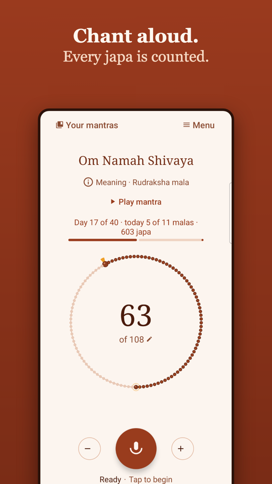
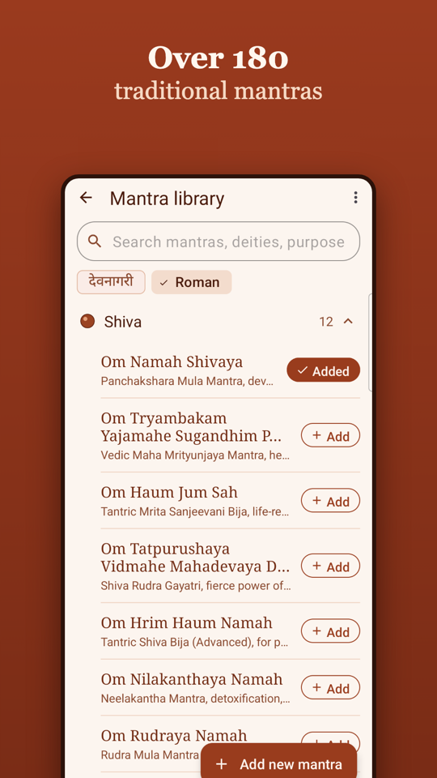
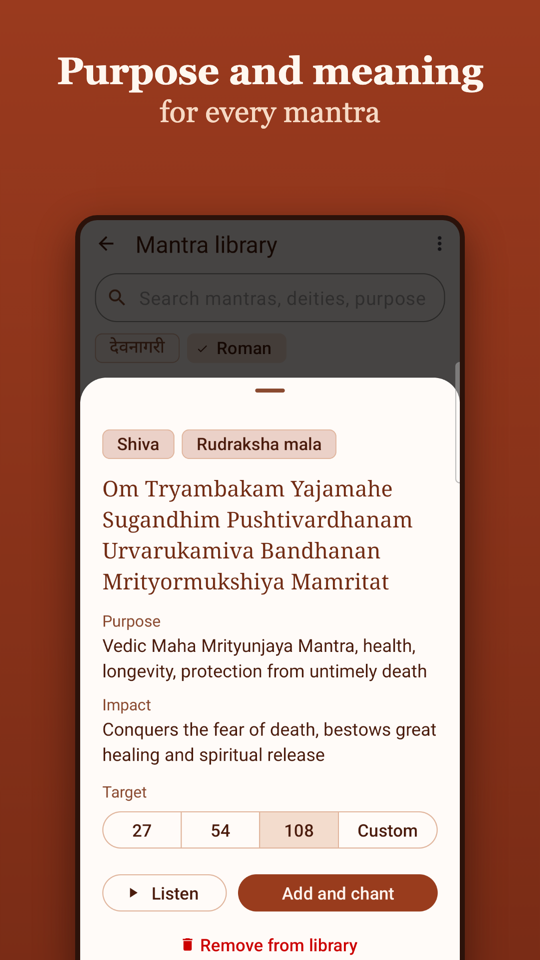
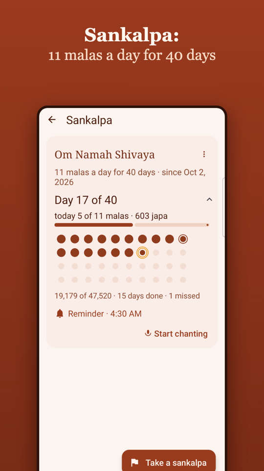
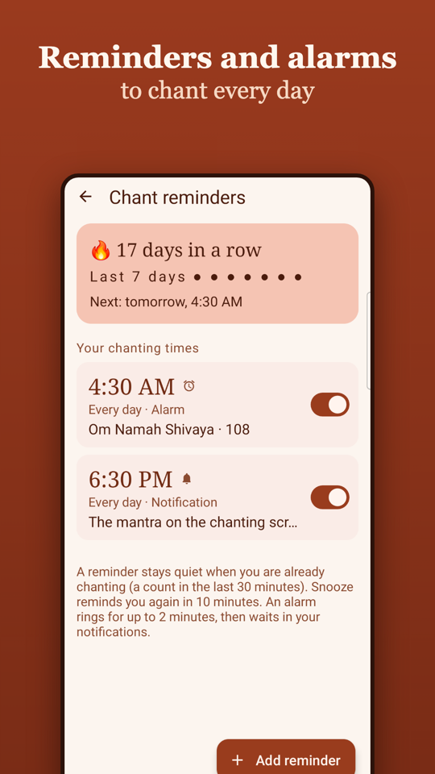
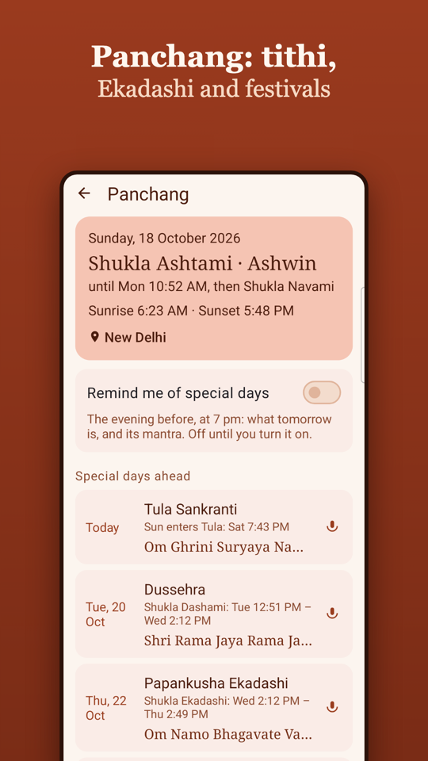

Chant aloud. Every jaap is counted.
An offline japa counter with a digital mala: it listens while you chant and moves one bead for every repetition. Hands free, eyes closed if you like.
📸 Screenshots






✨ Features
- 🎙️ Counts by listening: offline speech recognition on your phone, even with the screen off.
- 📿 Over 180 traditional mantras, with purpose and meaning in English and Hindi, in Devanagari or Roman letters.
- 🎯 Targets and malas: 27, 54, 108 or your own number; Rudraksha, Tulsi, Sandalwood, Sphatik or Haldi mala.
- 🙏 Sankalpa (anushthan): e.g. 11 malas a day for 40 days, tracked day by day.
- ⏰ Chant reminders: daily times or a wake-up alarm, with a streak of days in a row.
- 🌙 Panchang: today's tithi, sunrise and sunset, Ekadashi and festivals ahead, each with a mantra.
- 🌐 English and Hindi, light and dark themes. No account, no ads, no tracking.
🔒 Privacy
Your chanting is counted on your phone and never sent anywhere; your mantras and counts stay on your phone. Read the full Privacy Policy and Terms of Use (also in हिन्दी).
Contact: support@codetumblr.net